Kristallklangschalen
G3E3D4
Ihre klaren, lang tragenden Töne breiten sich im ganzen Körper aus und tragen den Raum zwischen den Gongklängen. In der Chakrenlehre werden D, E und G dem Sakral-, Solarplexus- und Halschakra zugeordnet.
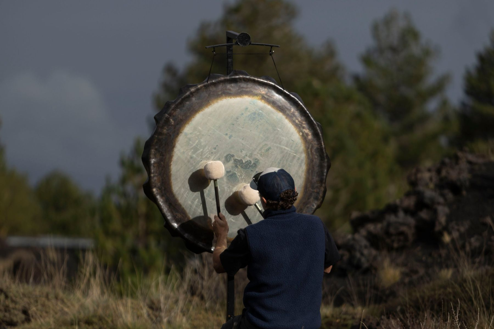
Klangräume, die einstimmen auf mehr Ruhe, Ausgeglichenheit und Lebenskraft.
Transmissions von Bodhi Saman
Sacred Sound Spaces sind spirituelle Klangräume, in denen Menschen zur Ruhe kommen, ihr Nervensystem entspannen und sich wieder mit sich selbst, miteinander und mit etwas Größerem verbinden.
Getragen von Kristallklangschalen, einem selbstgebauten Planetengong und den Stimmen weiterer Klangkünstler entsteht ein Raum, in dem der Alltag leiser wird und das Innere hörbar. Ob als Einzelsession, für Paare, für Teams oder als Klangreise auf Konferenzen, Messen, Offsites und Retreats: Jeder Sacred Sound Space ist eine Transmission – eine Übertragung von Frequenzen, die nicht verstanden, sondern gefühlt werden will.
Die Energie, nach der wir im Außen jagen, liegt ganz in uns.
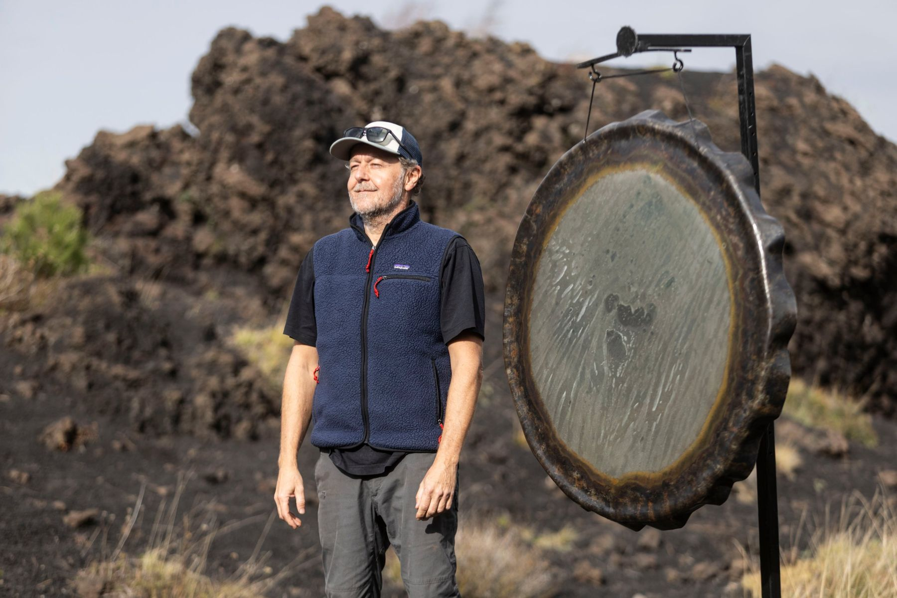
Hinter Sacred Sound Spaces steht Markus Hirschl, der in seiner spirituellen Arbeit den Namen Bodhi Saman trägt. Klang und Spiritualität begleiten ihn seit vielen Jahren. Seine Zeremonien nennt er Transmissions: Er versteht sich als Übermittler, der durch seine Klangportale Frequenzen und Informationen an die Empfangenden weitergibt.
Knapp 30 Jahre war er als Grafikdesigner und Kreativdirektor in Werbeagenturen und internationalen Unternehmen tätig, dazu kommen zahlreiche Coaching-Ausbildungen und Führungskräftearbeit. Er kennt den Takt und den Druck der Unternehmenswelt von innen. Heute verbindet er diese Erfahrung mit Klangarbeit, Humanenergetik und Kraniosakralarbeit.
Gong, Kristall, Holz, Fell und Stimme: Jedes Instrument öffnet eine eigene Tür in den Klangraum.
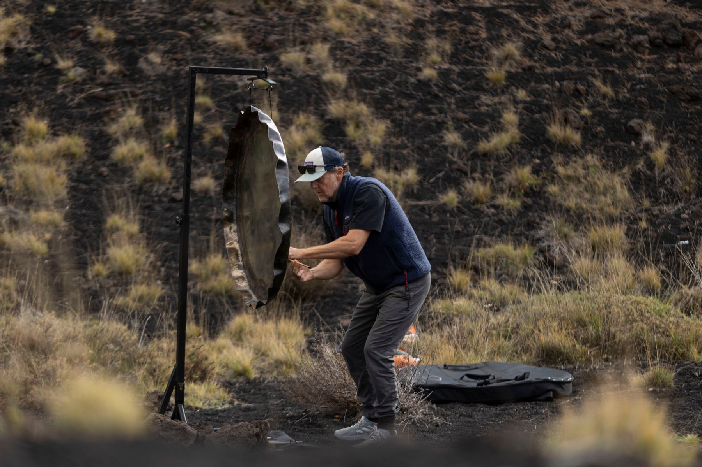
Das Herzstück ist ein selbstgebauter MeteoriteGong®, entstanden am Ätna im Kreationsprogramm der Künstlerin Pauline Fabry. Sein Name verweist auf die Kraft des ägyptischen Sonnengottes RA und auf die Ordnung der Göttin MAAT, sein Symbol ist die geflügelte Sonnenscheibe mit den zwei Uräusschlangen.
Bodhi Saman versteht ihn als Portal in die geistige Welt und spielt ihn stets mit reinem Herzen – im Geist der Federwaage der MAAT.
Ihre klaren, lang tragenden Töne breiten sich im ganzen Körper aus und tragen den Raum zwischen den Gongklängen. In der Chakrenlehre werden D, E und G dem Sakral-, Solarplexus- und Halschakra zugeordnet.
Regenrohre, schamanische Flöten und Trommeln sowie Chajchas, die traditionellen Rasseln der Anden, ergänzen die Reise mit erdigen, natürlichen Klängen – vom sanften Rieseln des Regens bis zum tragenden Herzschlag der Trommel.
Für größere Formate lädt Bodhi Saman Klangkünstler aus seinem Netzwerk ein: Menschen, die chanten, Mantren oder frei singen, und Musiker, die elektronische Ambient-Klänge einweben.
Das Auge RA entstand im November 2026 auf Sizilien, im MeteoriteGong Creation Programm auf dem Ätna von Pauline Fabry, der Begründerin von MeteoriteGong®. Geformt, geflammt und aufgeladen wurde er im Zusammenspiel mit den Elementen.
Unter Hammer und Flamme bekommt die Metallscheibe ihre Form und ihre Farben. Lavasteine des Ätna liegen dabei auf dem werdenden Gong.
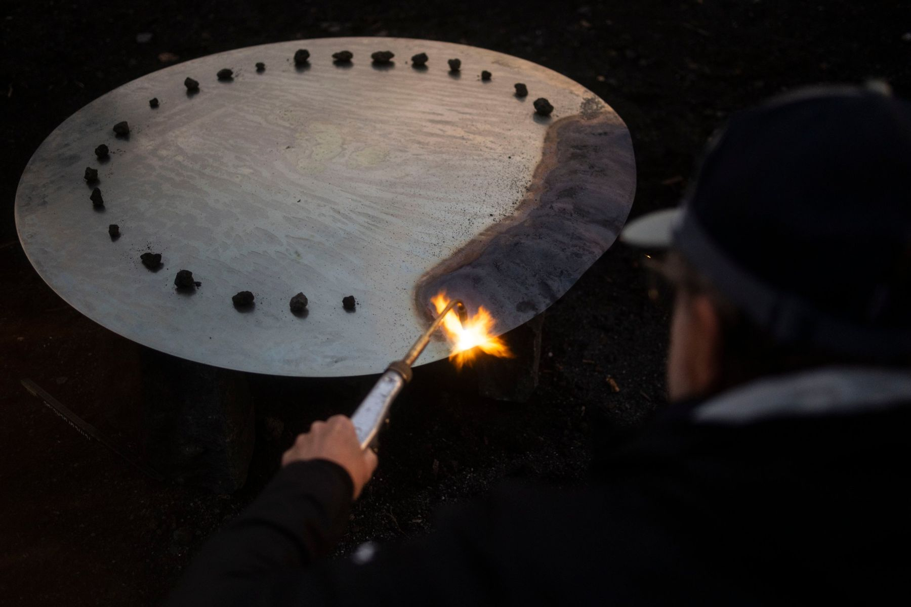
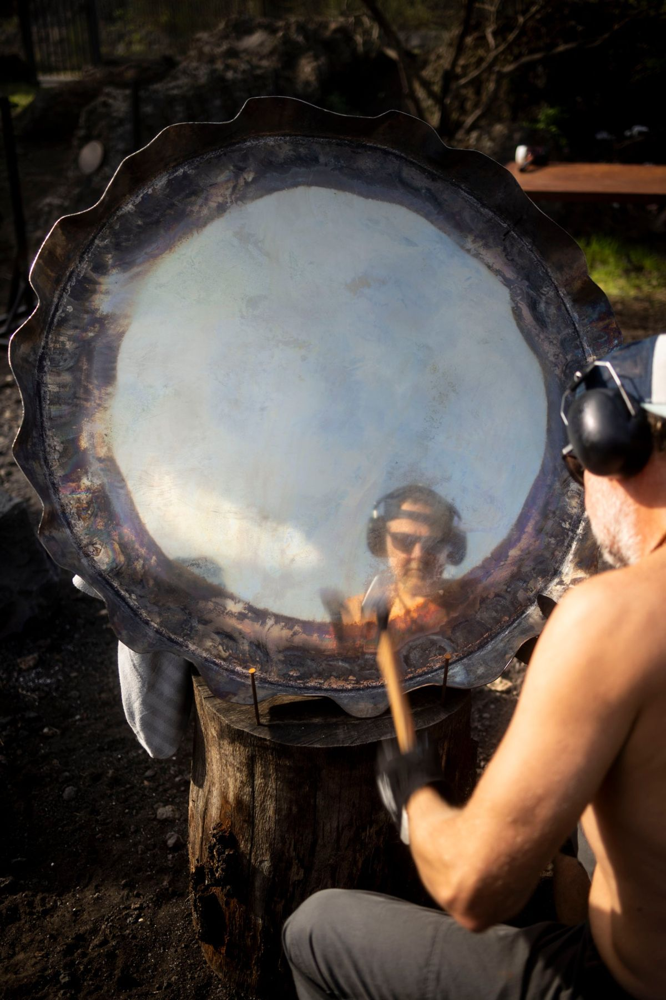
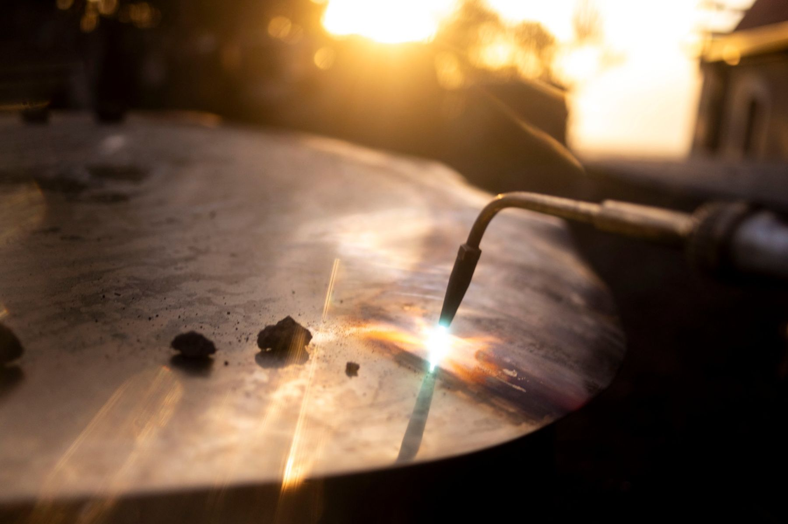
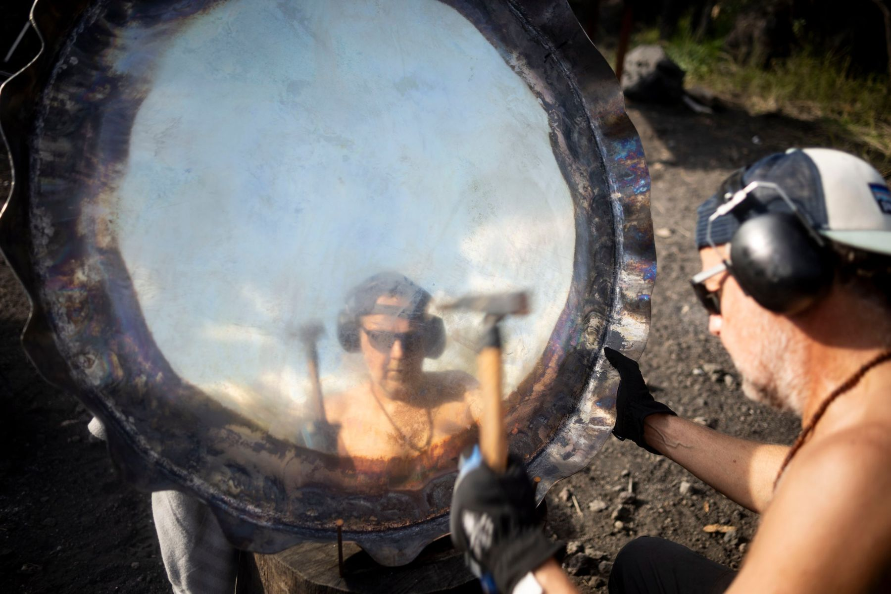
Im Alcantara-Fluss und im sizilianischen Meer wird der Gong ins Wasser getragen und mit diesem Element verbunden.
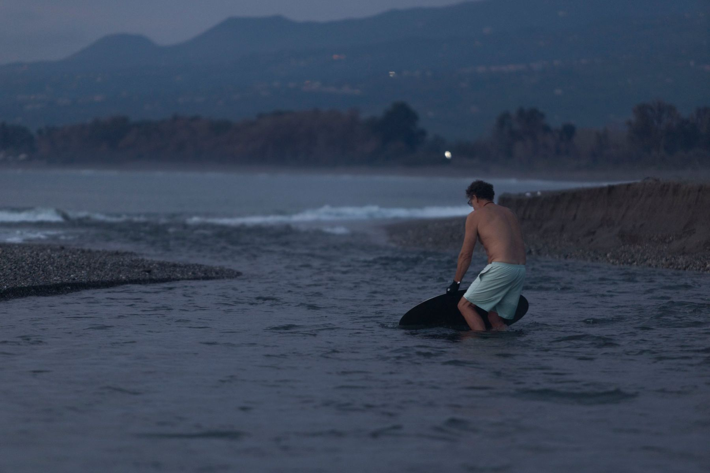
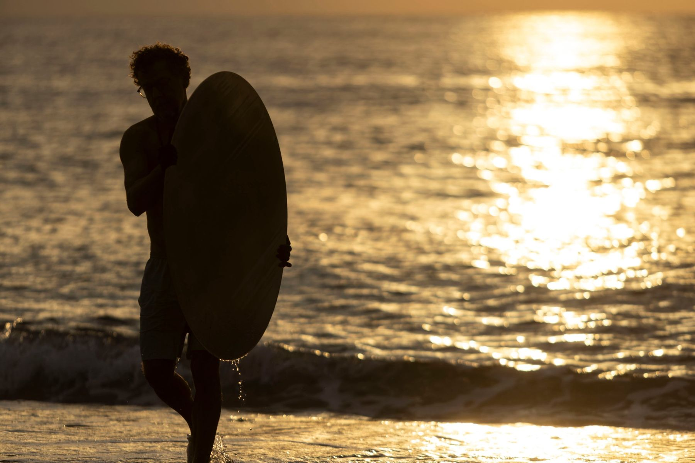
Auf dem Ätna, zwischen Lava, Höhlen und Schluchten, verbindet sich die Reise mit der Kraft des Vulkans.
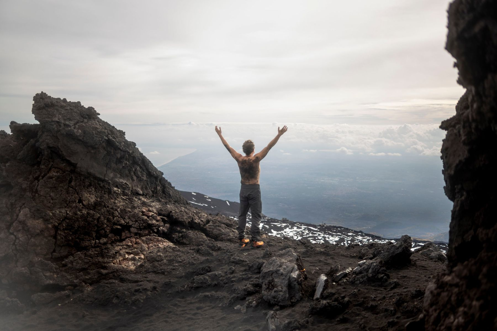
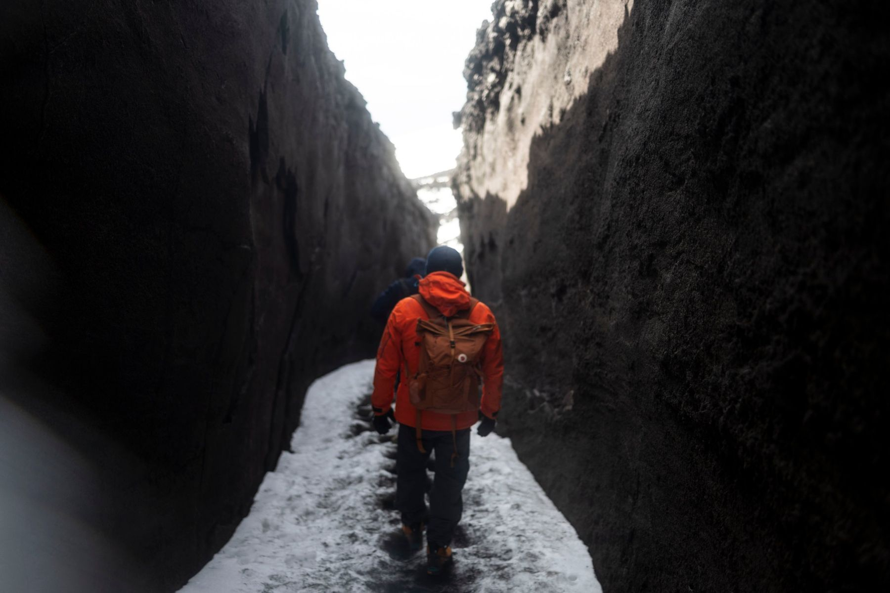
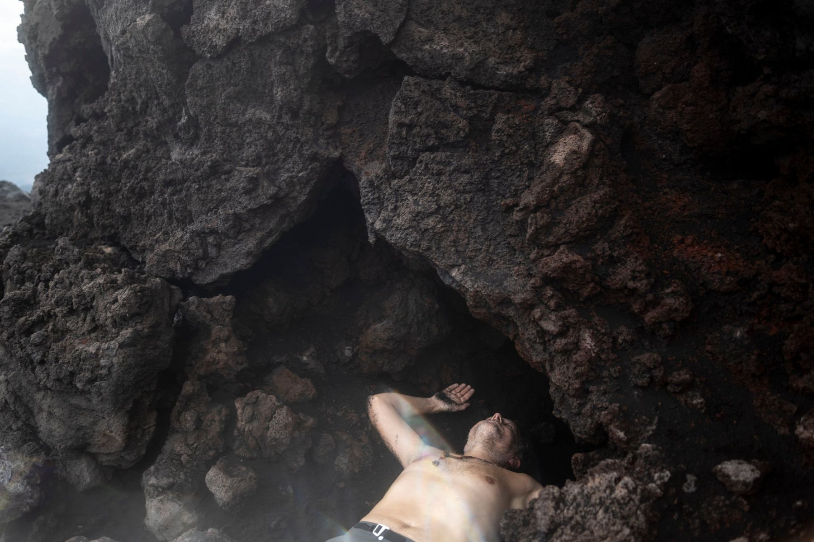
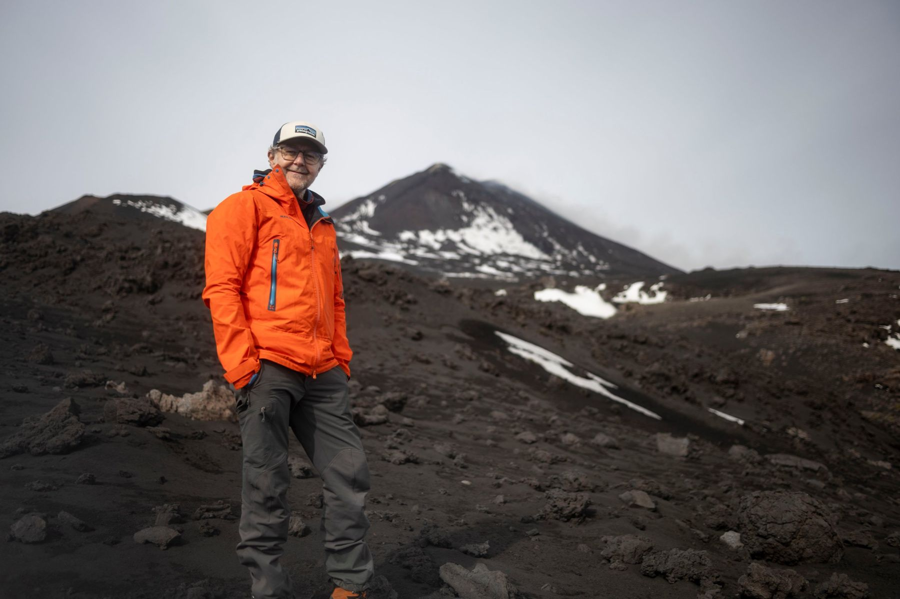
Am Fuß des Ätna erklingt das Auge RA zum ersten Mal – die erste Transmission.
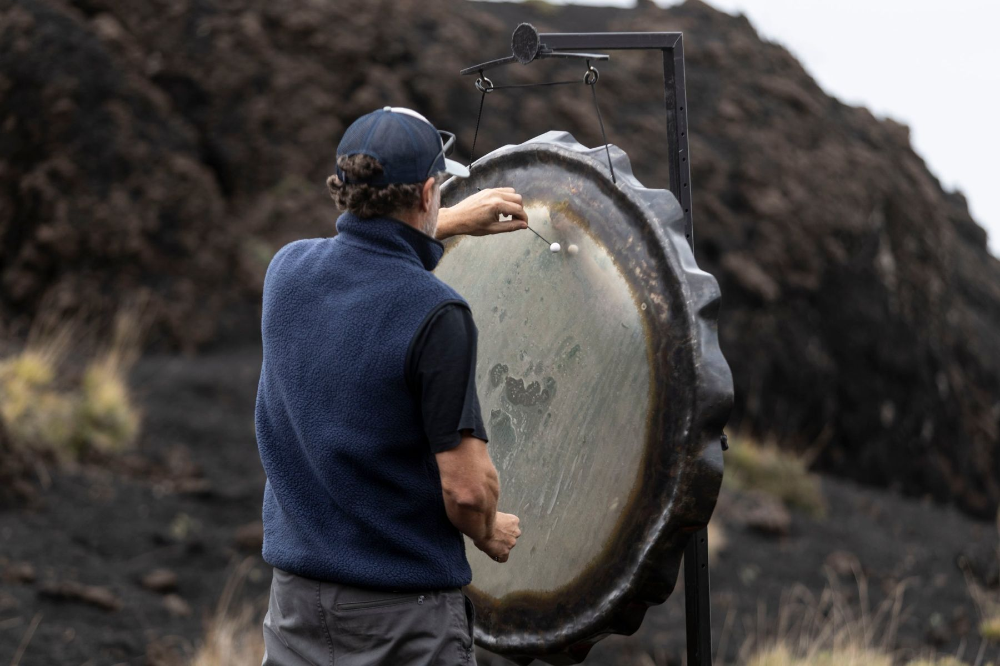
Fotos: MeteoriteGong Creation mit Pauline Fabry und MeteoriteGong®
In einem geschützten Klangraum in seinem Studio bietet Bodhi Saman persönliche Sessions an.
Sacred Sound Spaces bringen Klang dorthin, wo Menschen zusammenkommen – direkt ins Unternehmen oder an ausgewählte, besondere Orte.
Auf Messen, Konferenzen, Offsites und Retreats reiht sich Input an Input: Vorträge, Gespräche, Workshops, Gedränge und Geräuschkulisse. Was dabei fast immer fehlt, ist ein Rückzugsraum.
Ein Sacred Sound Space schafft genau diesen Raum. In der Stille und im Klang darf sich das Nervensystem regulieren, die Anspannung des Tages fällt ab. Die Menschen kommen wieder bei sich an und werden aufnahmefähig für das, was folgt – für neue Inhalte, gute Gespräche und klare Entscheidungen. Teams, die gemeinsam zur Ruhe kommen, begegnen sich danach offener und verbundener.
Bei größeren Events gestaltet Bodhi Saman den gesamten Raum, damit sich jeder Mensch darin wohl und gehalten fühlt – umhüllt von Düften, liebevoller Dekoration und visuellen Erlebnissen aus Licht und Projektionen.
Spirituelle und energetische Reinigung des Raums vor der Zeremonie.
Duftdiffuser, Licht und Videoprojektionen.
Aufgehängte Tücher, Liegen, Kissen, Felle und Decken – alles mitgebracht.
So wird aus jedem Seminarraum, jeder Halle und jedem Studio ein Ort, an dem Klang wirklich ankommen kann: Der Klang wird zu den Menschen übermittelt, seine Frequenzen werden körperlich und geistig spürbar, und jeder Mensch fühlt sich neu verbunden – mit sich selbst, der Welt und dem Universum.